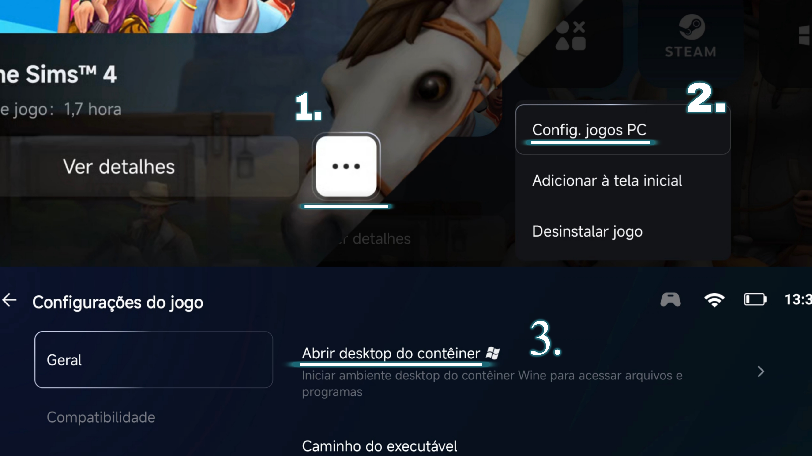

Guia Completo
Rode The Sims 4 no android + mods! Passo a passo :3

Rode The Sims 4 no android + mods! Passo a passo :3
Modelo: Redmi Note 13 Pro 5G
Processador: MediaTek Dimensity 7200 Ultra
RAM: 12,0+6,0 GB
Baixar jogo + apps necessários
Configurar GameHub corretamente

Ajustes de Wine e GPU para mais FPS
Como instalar WickedWhims e CC
Jogo e Mods totalmente em Português
Como abrir a interface do Windows e gerenciar os arquivos
Dica contra anúncios: Ative o DNS Privado dns.adguard.com nas configurações do seu celular antes de prosseguir with o download.
Acesse o site Knysims, use a lupa para pesquisar por "Deluxe" e escolha a versão desejada. No modo de download, escolha "Mediafire".
Acessar KnysimsAo ser redirecionado para o Loadifly, clique em "Fechar Propaganda". Quando o celular perguntar "Selecionar atividade", escolha o 1DM.
Instale o 1DM para gerenciar o download do jogo base sem erros.
O Cx Explorador é ótimo para organizar seus mods na memória do Android antes de movê-los.
Baixar Cx Explorador1. Use o ZArchiver para extrair o .zip na pasta Downloads. Isso criará a pasta do jogo base.
Baixar ZArchiver2. Instale o emulador GameHub:
Baixar GameHub Oficial3. Em "Meu" > "Import Games" > "Jogo PC", selecione o .exe no caminho:
D:/The Sims 4 Base Deluxe / The Sims 4 / Game / Bin / TS4_DX9_x64.exe
PASSO VITAL: Abra o jogo uma vez até o menu principal. Isso gera a pasta "Documents" no Drive C: interna. Sem isso, a pasta Mods não existirá!
Como executar o TS4_DX9_x64.exe no GameHub:
Resolução: 960x544
Wine: wine9.5-x64-2
DXVK: dxvk-1.7.2
CPU: box64-0.39
Configurações no Contêiner
Menu de deslizar (Interface visual do contâiner/botãos):
1. Onde encontrar Roupas e Cabelos (CC):
Para mods de roupas/cabelos/detalhes de skin, pesquise no Pinterest ou no Patreon. Recomendo o Pinterest pra ter uma gama melhor dos conteúdos desejados, normalmente os links linkados em imagens/videos no Pinterest, levam ao Tumblr/Patreon e lá irá ter os arquivos para download. O processo de "instalação" para o ts4 reconhecer é; extrair o arquivo caso venha zipado (.zip) através do ZArchiver e pegar os arquivos .packages e levar até a pasta Mods em Documents/Eletronic Arts/The Sims 4/Mods.
2. Ativação Interna:
Vá em Opções de Jogo > Outros e ative:
Você deve reiniciar o jogo para os mods aparecerem.
Como colocar Mods:
3. Instalando o WickedWhims:
Mova os arquivos .package e .ts4script (sem subpastas) para:
C:/Users/Container/Documents/Electronic Arts/The Sims 4/Mods
Baixar WickedWhims
Tradução WickedWhims (Opcional, só baixe a tradução se você for baixar o WickedWhims):
Baixar Tradução WickedComo ativar os drivers do Wicked:
Dica do Aten: Organize seus mods no Android em uma pasta chamada 'SIMS 4 MODS' usando o Cx Explorador. No contêiner, fica muito mais fácil de mover tudo de uma vez do Drive D: para a pasta Mods.
Erro/Bug? Se o mod não carregar, delete o arquivo localthumbcache.package na pasta principal do jogo em Documents.
Jogo Base:
Mova o language-changer para o Drive D: (onde está o exe). Caso dê erro de permissão, tente rodar ele a partir do Drive C:.
Baixar Language Changer
Importante:
Alguns mods do WickedWhims precisam de tradução própria além da 'padrão' do mutsvki. Por isso, se ao entrar dentro do TS4 e algum mod que você baixar estiver mostrando as letras em inglês para você, você pode consertar isso buscando a tradução no google. Normalmente, a tradução vem no formato .zip é só extrair através do ZArchiver e, dentro do contêiner do TS4, copiar o .packages da tradução e colar a tradução na pasta Mods em Documents/Eletronic Arts/The Sims 4/Mods
Para gerenciar arquivos e mods, você precisa entrar no ambiente desktop do Wine.
1. Clique nos três pontinhos (...) do jogo.
2. Selecione "Config. jogos PC".
3. Clique em "Abrir desktop do contêiner".
Onde fica o Contêiner pra eu mexer nos arquivos? Aqui!

Já dentro da interface, clique com dois dedos para abrir o menu de contexto (botão direito) e use Cortar/Colar.